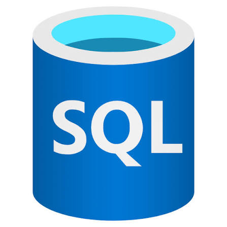

Haz clic en cualquier tecnología para ver cómo se aplica en Ingeniería Informática
Haz clic en cualquiera de los 6 botones de abajo para conocer su función y aplicación profesional dentro de la carrera en la UNFV.
